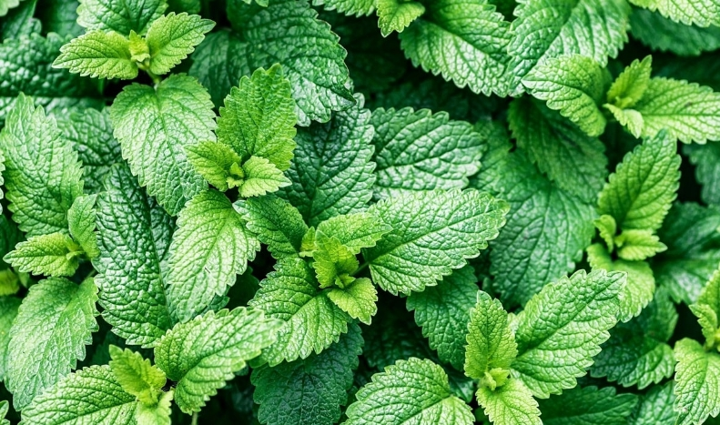
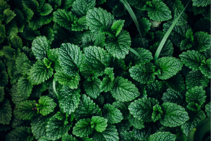

Bom para a gripe,resfriado e dor no corpo. A menta possui propriedades descongestionantes, que podem aliviar o nariz entupido e proporcionar sensação de alívio respiratório.

A menta é uma planta pequena e facil de cuidar e um ótimo remedio natural para combater alivirar os sintomas da gripe.
Sementes de Menta/Hortelã R$3,86
Clique para mais informações.
Para o cultivo da menta permita que cresçam alguns centímetros de comprimento antes do plantio. O vaso ideal para a hortelã/menta deve apresentar cerca de 30 a 40 cm de diâmetro, para que suas raízes se desenvolvam bem e a planta cresça forte e viçosa. Embora a hortelã e a menta exija bastante água, o solo deve estar sempre bem drenado.
Os chás de Hortelã-Pimenta ajudam a aliviar a
alergia e a coceira além de ter propriedades antibacterianas anti-inflamatórias, antissépticas e efeitos calmantes para ajudar em qualquer tipo de irritação.

A Hortelã-Pimenta é uma planta fácil de cultivar e que não requer tantos cuidados.
Sementes de Menta/Hortelã Piperita R$1,99(PIX) no cartão em até 1x de R$ 2,12 sem juros
Clique para mais informações.
A Hortelã-Pimenta é uma das plantas que so podem ser cultivadas através de caules,estacas, mudas ou estolhos saudaveis onde ela podera se ploriferar, Regue a planta regularmente e deixe-a e um lugar iluminado mas sem ser luz direta depois que ela ficar maior retire o pé de Hortelã-Pimena para um lugar definitivo onde ela ficara.
Tosse
Dor de garganta
Fraqueza
Dor no corpo